<!DOCTYPE html>
<!--默认iphone6的屏幕大小-->
<html style="font-size: 50px;">
<head>
    <meta charset="utf-8">
    <meta name="viewport" content="initial-scale=1, maximum-scale=1, user-scalable=no, width=device-width">
    <meta name="format-detection" content="telephone=no email=no"/>
    <title></title>
    <!--动态调整html元素的font-size大小, 全局使用rem单位-->
    <script>
        (function (doc, win) {
            var docEl = doc.documentElement,
                    resizeEvt = 'orientationchange' in window ? 'orientationchange' : 'resize',
                    recalc = function () {
                        var clientWidth = docEl.clientWidth;
                        var clientHeight = docEl.clientHeight;
                        if (!clientWidth) return;
                        var tmp;
                        (clientWidth < clientHeight) ? (tmp = clientWidth) : (tmp = clientHeight);
                        //
                        if (tmp > 414) {
                            tmp = 414;
                        }
                        //横屏时,高度为基准;竖屏时,宽度为基准
                        docEl.dataset.width = tmp;
                        docEl.dataset.percent = 100 * (tmp / 750);
                        //由屏幕宽度得到basefont大小,并将其写入html标签中,文档总的尺寸由rem确定
                        docEl.style.fontSize = 100 * (tmp / 750) + 'px';
                        doc.getElementsByTagName('html')[0].removeAttribute('class');
                    };
            if (!doc.addEventListener) return;
            win.addEventListener(resizeEvt, recalc, false);
            doc.addEventListener('DOMContentLoaded', recalc, false);
        })(document, window);
    </script>
    <!--<link href="lib/ionic/css/ionic.css" rel="stylesheet">-->
    <!--<link href="css/ionic.app.css" rel="stylesheet">-->
    <link href="css/ionic.debug.css" rel="stylesheet">
    <link href="css/style.css" rel="stylesheet">
    <style>
        body {
            margin: 0;
        }

        .wx_loading {
            display: flex;
            justify-content: center;
            align-items: center;
            flex-wrap: wrap;
            align-content: center;
            position: absolute;
            width: 100%;
            height: 100%;
            background-color: #ddd;
            color: #000;
            font-size: 0.5rem;
        }

        .wx_loading p {
            width: 100%;
            margin: 0 0 0.1rem 0;
            text-align: center;
        }
    </style>

    <!--微信接口-->
    <!--<script src="http://res.wx.qq.com/open/js/jweixin-1.0.0.js"></script>-->
    <script src="lib/jweixin-1.0.0.js"></script>
    <!--Internal:程序运行环境判断-->
    <script src="./bridge.js"></script>


    <!-- ionic/angularjs js -->
    <script src="lib/ionic.bundle.min.js"></script>

    <!--拆分-->
    <!--<script src="lib/angular.min.js"></script>-->
    <!--<script src="lib/angular-animate.min.js"></script>-->
    <!--<script src="lib/angular-sanitize.min.js"></script>-->
    <!--<script src="lib/angular-ui-router.min.js"></script>-->
    <!--<script src="lib/ionic.min.js"></script>-->
    <!--<script src="lib/ionic-angular.min.js"></script>-->

    <!-- cordova script (this will be a 404 during development) -->
    <!--<script src="cordova.js"></script>-->

    <!--配置信息-->
    <script src="./config.js"></script>
    <!-- your app's js -->
    <script src="./app.js"></script>

    <!--parts-->
    <script src="js/controllers.js"></script>
    <script src="js/services.js"></script>
    <script src="js/routers.js"></script>
    <script src="js/directives.js"></script>
    <script src="js/filters.js"></script>
    <script src="js/utils.js"></script>


    <!--以来加载部分-->
    <script src="js/lazyLoadMap.resource.js"></script>


    <!--lib-->
    <script src="lib/ngStorage.min.js"></script>
    <!--socket.io main script-->
    <script src="lib/socket.io.min.js"></script>
    <!--socket for angualar parts-->
    <script src="lib/socket.min.js"></script>
    <!--lazyload-->
    <script src="lib/ocLazyLoad.min.js"></script>


</head>
<!--测试使用的假数据-->
<script>
    //    Internal.isInApp = true;
    //            Internal.isInWeiXin = false;
    //        Internal.isInWeiXin = true;
    //
    //                    localStorage.setItem("ngStorage-homeInfo", JSON.stringify({"userDisplayIntegral":5340,"nextIntegral":"5000","vipEndTIme":"2016/4/7","cardupgrade0":"200","cardupgrade1":"5000","carddegrade0":"5000","progress":106.80000000000001}));
    //
    //                    localStorage.setItem("ngStorage-userInfo", JSON.stringify({"customerid":25,"cardno":"1000004020","isattention":1,"fullname":"向松涛","channelcode":5,"typecode":"customertype_2,customertype_3","orgid":"D8F248C4-14F7-40DB-A273-5033DEEABCBA","levelid":3,"countrycode":"中国","provincecode":"云南省","citycode":"保山市","gendercode":"gender_0","birthday":"2004-10-10","mobile":"18761938554","email":"","address":"手动阀哦啦","idtypecode":null,"idnum":"111","qq":"","statuscode":1,"photo":"fa706c6c-8c43-4940-a7f4-d018ff159a3a","notes":null,"totaltradeamount":1111,"tradetimes":2,"cumulativenum":5340,"currenttotalnum":1229,"openid":"oyCF1juy6VC1xhD-tNXIdU4CFbPA","nickname":null,"accountid":null,"haschildren":2,"duetime":"2016-09-01 23:59:59"}));
    //

</script>
<!--<body ng-controller="mainCtrl">-->
<body ng-app="smartac" ng-controller="mainCtrl">

<!--微信模式下,出现loading画面-->
<!--<div class="wx_loading">-->
    <!--<p>正在加载,请稍后!</p>-->
    <!--<p>已下载: <span id="wx-loading-js">0%</span></p>-->
<!--</div>-->

<!--
  此为顶级page页,专属于无导航栏的页面,比如Home/Member(会员中心)
-->
<ion-nav-view></ion-nav-view>

</body>


<div id="showShareDark" class="">
    
</div>


</html>


<!--首页文件 预加载-->
<div style="display: none;">
    
    
    
    
    
</div>